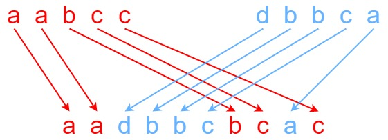

97. 交错字符串
DP：dp[i][j] = s1 前 i 个与 s2 前 j 个能否交错成 s3 前 i+j 个；s3 这一位来自 s1 就看上方、来自 s2 就看左边，滚动一维。
思路
- 先判长度：
|s1| + |s2| ≠ |s3|直接false。 dp[i][j]：s3[i+j−1]要么来自s1[i−1]（继承上方dp[i−1][j]），要么来自s2[j−1]（继承左边dp[i][j−1]），字符对得上才能继承。- 第 0 行/第 0 列是「只用一个串拼前缀」，一断全断；正文按行填，用一维滚动：
dp[j]（未更新时正好是上一行的值）当上方、dp[j−1]当左边。 - 为什么不能贪心：两个串常有相同字符，当前匹配不代表后面走得通，必须保留所有可达状态。
图解
最优解
1class Solution {2 public boolean isInterleave(String s1, String s2, String s3) {3 int m = s1.length(), n = s2.length();4 // 长度对不上，直接不可能5 if (m + n != s3.length()) return false;6 // dp[j]：s1 前 i 个、s2 前 j 个能否交错成 s3 前 i+j 个7 boolean[] dp = new boolean[n + 1];8 dp[0] = true;9 // 第 0 行：只用 s2 的前 j 个拼 s3 的前 j 个10 for (int j = 1; j <= n; j++) dp[j] = dp[j - 1] && s2.charAt(j - 1) == s3.charAt(j - 1);11 for (int i = 1; i <= m; i++) {12 // 第 i 行开头：只用 s1 的前 i 个13 dp[0] = dp[0] && s1.charAt(i - 1) == s3.charAt(i - 1);14 for (int j = 1; j <= n; j++) {15 char c = s3.charAt(i + j - 1);16 // s3 这位来自 s1（上方）或 s2（左边），字符对上才继承17 dp[j] = (dp[j] && s1.charAt(i - 1) == c) || (dp[j - 1] && s2.charAt(j - 1) == c);18 }19 }20 return dp[n];21 }22}题目
给定三个字符串 s1、s2、s3，请你帮忙验证 s3 是否是由 s1 和 s2 交错 组成的。
两个字符串 s 和 t 交错 的定义与过程如下，其中每个字符串都会被分割成若干 非空 子字符串：
s = s1 + s2 + ... + snt = t1 + t2 + ... + tm|n - m| <= 1- 交错 是
s1 + t1 + s2 + t2 + s3 + t3 + ...或者t1 + s1 + t2 + s2 + t3 + s3 + ...
注意：a + b 意味着字符串 a 和 b 连接。
示例 1：

输入：s1 = "aabcc", s2 = "dbbca", s3 = "aadbbcbcac" 输出：true
示例 2：
输入：s1 = "aabcc", s2 = "dbbca", s3 = "aadbbbaccc" 输出：false
示例 3：
输入：s1 = "", s2 = "", s3 = "" 输出：true
提示：
0 <= s1.length, s2.length <= 1000 <= s3.length <= 200s1、s2、和s3都由小写英文字母组成
进阶：您能否仅使用 O(s2.length) 额外的内存空间来解决它?
题面取自力扣当前版本。
数据快照 2026-11-04。题面版权归力扣所有，本站点仅供本人学习使用，请勿对外发布。